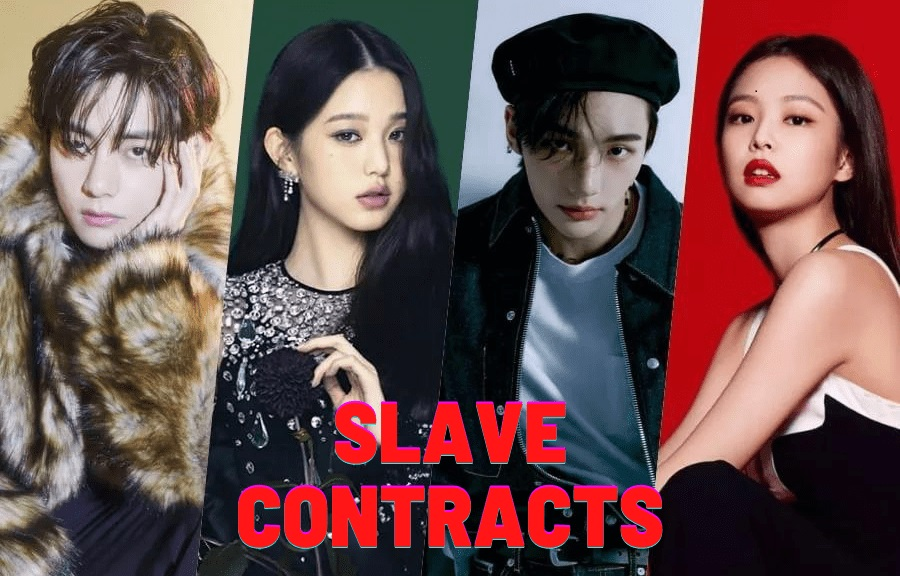

<article>
    <div class="article">
        <div class="article-image">
            
        </div>
        <div class="article-content">
            <div class="article-date date">PHOTOGRAPHY - NOV 11, 2020</div>
            <h3 class="article-title">DARK SIDE OF BTS | K-POP & SLAVE CONTRACT EXPLAINED</h3>
            <p class="article-description typo"> In recent years, BTS has taken the world by storm, becoming one of the most successful K-pop groups globally. With their catchy music, synchronized dance routines, and dedicated fanbase, the septet has achieved immense fame and success. However, behind the glitz and glamour of the K-pop industry lies a darker side that often goes unnoticed. In this blog post, we will delve into the concept of "slave contracts" and shed light on the challenges faced by artists like BTS.</p>
            <div class="article-btn">Read More <i class="fas fa-long-arrow-alt-right ml-1"></i></div>
        </div>
    </div>
</article>